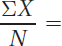

33
Answers to the odd-numbered exercises appear in Appendix B.
Review Your Knowledge
1.01 Statistics _______ data in order to answer questions.
1.02 The characteristics measured by a researcher are called _______.
1.03 The objects being studied by a researcher are called _______.
1.04 In a correlational design, the two variables are simply measured; they are not _______ by the experimenter.
1.05 If two variables, X and Y, are found to be related in a correlational design, the three possible explanations for the relationship are: (a) _______, (b) _______, and (c) _______.
1.06 A third variable that could be the real cause of an apparent relationship between X and Y in correlational research is called _______.
1.07 _______ is the hallmark of an experimental design.
1.08 In an experimental design, the _______ variable is manipulated or controlled by the experimenter.
1.09 The variable where the effect is measured in an experimental design is called the _______.
1.10 Experimental designs allow one to draw a conclusion about _______.
1.11 In a quasi-experimental design, cases are classified into _______ based on characteristics they already possess.
1.12 Though a quasi-experimental design looks like a (an) _______ design, it is really a (an) _______ design.
1.13 The mnemonic iced stands for _______.
1.14 The _______ variable in _______ is called the dependent variable.
1.15 The explanatory variable in quasi-experimental designs is called the _______ variable.
1.16 A ratio-level number contains _______ information than a nominal-level number.
1.17 The mnemonic to help remember, in order, the four levels of measurement is _______.
1.18 Nominal-level numbers contain information about _______.
1.19 _______-level numbers contain information about same/different and direction.
1.20 Because interval-level numbers have _______, we can meaningfully speak of the distance between two scores.
1.21 Interval-level numbers have a (an) _______ zero point, and ratio-level numbers have a (an) _______ zero point.
1.22 Proportions can be found for _______-level numbers.
1.23 A (an) _______ is the larger group of cases that a researcher is interested in studying.
1.24 A sample is a (an) _______ of a population.
1.25 A number characterizing a sample is called a (an) _______; a number characterizing a population is called a (an) _______.
1.26 We use _______ letters as abbreviations for sample values and _______ letters as abbreviations for population values.
1.27 If a summary statement is used to describe a group of cases, it is a (an) _______ statistic; if it is used to draw a conclusion about the larger population, it is a (an) _______ statistic.
1.28 The letter we use as an abbreviation for an outcome variable is _______. The abbreviation for the number of cases in a group is _______. The symbol for adding up a group of scores is _______, the uppercase Greek letter sigma.
1.29 According to the American Psychological Association, final results should be rounded to _______ decimal places.
1.30 If you do round as you go, carry at least _______ decimal places.
34
Apply Your Knowledge
Figuring out types of studies and types of variables
For Exercises 1.31–1.38:
Generate a sentence that states the question the researcher is trying to answer.
List the variables and label them as explanatory and outcome.
Determine what type of study is being done: correlational, experimental, or quasi-experimental.
If the study is correlational or quasi-experimental, come up with a plausible confounding variable and explain how it affects both variables.
1.31 The local police department has come to a criminologist to help it evaluate a new type of disposable, plastic handcuffs. They are just as effective as metal handcuffs in terms of immobilizing someone who has been arrested and they are cheaper than metal handcuffs, but the police are concerned that the plastic ones might cause more abrasion to the skin of the wrist. The criminologist finds 20 volunteers, randomly divides them into two groups, cuffs one group with metal and the other with plastic, and then rides them around in a squad car for 20 minutes. After this, the criminologist measures the degree of abrasion on their wrists as the percentage of skin that is roughed up.
1.32 Some football players put streaks of black paint under their eyes because they believe that it helps them see better in sunny conditions and react more quickly. A sensory psychologist wants to see if this is really true. He gathers a group of volunteers and randomly divides them in two. Half get black paint applied under their eyes and half get flesh-color. The players are not allowed to look in the mirror, so they don’t know which color has been applied below their eyes. The psychologist then gives them a reaction time task to measure, in milliseconds, how quickly they can respond to a change in a stimulus while bright lights are being shined at them.
1.33 Ever notice that some college students buy all the books for class, complete all the readings, do all the homework, and so on? These students usually end up with better grades as well. An education professor decided to investigate if these more conscientious students received better grades because they worked harder or because they were innately smarter. The professor assembled (a) a group of conscientious students from a number of different colleges and (b) a group of nonconscientious students from the same colleges, and compared the two groups in terms of a standardized IQ test.
1.34 A personality psychologist has kindergarten teachers use an empathy scale that ranges from 0 (not at all empathetic) to 100 (extremely high levels of empathy) to rate their students. Thirteen years later, when the students are ready to graduate from high school, he tracks them down and rates their level of mental health on a scale from 0 (very, very poor) to 100 (very, very good).
1.35 An economist believed that as nations become wealthier, they produce more greenhouse gases. He took a country and found both its gross domestic product (GDP) and the total tons of CO2 emissions for each year over the past 50 years.
1.36 A consumer behavior researcher is curious as to whether, in terms of the monetary value of Christmas presents received, it makes a difference if a child is naughty or nice. She has parents classify their children as naughty or nice, then calculates how much the parents spent on Christmas presents for the two different groups of children.
1.37 A political scientist is curious as to what influences voting behavior on taxes for school districts. She obtains a sample of voters and divides them, randomly, into three groups. One group serves as the control group, nothing is done to them. To one experimental group, she gives information about the school taxes that focuses on the positive—how the levy will improve student performance, make the community more attractive to young families, and so on. To the other experimental group, she gives negative information about the school taxes—how much overall taxes will increase, how school taxes will take away funding from other projects, how wasteful the school district has been, and so on. She then measures, for each group, the percentage voting in favor of the school taxes.
35
1.38 A neuroscientist believes that proteins form plaques in the brain that cause Alzheimer’s disease. He gets a sample of older adults, measures the nanograms per liter of protein in spinal fluid, and measures short-term memory as the percentage of words in a list that are recalled.
Determining level of measurement
1.39 A meteorologist classifies cities in the United States in terms of winter weather: “dreary” (0) or “not dreary” (1). Type of winter weather (0 vs. 1) is measured at what level of measurement?
1.40 A social worker obtains the suicide rates for students at colleges in the United States. If the college has a suicide rate that is below average, he classifies it as −1. If the suicide rate is average, the college gets a 0, and if the suicide rate is above average, it gets a +1. The suicide rate (−1, 0, +1) is being measured at what level of measurement?
1.41 The owner of an automobile shipping company classifies cars in terms of size. If a car is a subcompact, she assigns it the value of 1. A compact car gets a 2, a mid-size car a 3, and a full-size car a 4. At what level is she measuring car size?
1.42 The admissions committee at a college does not distinguish between different types of high school extracurricular activities. As far as it is concerned, being a member of the tiddlywinks club is equivalent to being student council president. On the admission form to the college, applicants are asked to report the number of extracurricular activities in which they were involved in high school. The college is measuring extracurricular activities at what level?
1.43 The same college asks students to submit their SAT scores, but only on the math subtest. Subtest scores on the SAT range from a low of 200 to a high of 800, with 500 representing an average score. The SAT measures math skills at what level?
1.44 A nurse researcher measures how many minutes patients must wait before being seen by the triage nurse after they enter an emergency room. Wait time is measured at what level?
1.45 A housing developer advertises her houses as being fully carpeted (2), partially carpeted (1), or not carpeted (0). Amount of carpeting is measured at what level?
1.46 A person’s knowledge of English grammar is measured by a 50-item multiple-choice test. Each correct answer is worth 2 points, so scores can range from 0 to 100. English grammar knowledge is being measured at what level?
1.47 If a person reads books for pleasure, he or she is classified as a “1”; if a person doesn’t read books for pleasure, he or she is classified as “0.” Whether or not a person reads books for pleasure is being measured at what level?
1.48 A person’s depression level is measured on a 20-item inventory where each item is a true/false item and is meant to measure depression. Each item endorsed in the “depressed” direction adds 1 point to the person’s score, so scores can range from 0 to 20. Depression level is being measured at what level?
Using statistical terminology
1.49 A college dean wanted to find out which students were smarter: those seeking liberal arts degrees (like English or psychology) or those seeking professional degrees (like nursing, business, or engineering). From all the colleges in the United States, she picked 1,200 liberal arts majors and 1,000 professional degree majors. Each student took an IQ test and she calculated the average IQ for each group.
Is the group of 1,200 liberal arts majors a sample or a population?
36
If the college dean uses the averages in statements like, “The average intelligence of liberal arts students in the United States is 115.67,” is she treating the averages as statistics or as parameters?
If she uses the two averages to answer her question, is this an example of inferential statistics or descriptive statistics?
1.50 A political pollster calls 2,000 registered American voters and finds out whether they plan to vote for the Democratic or Republican candidate in an upcoming election. From this she predicts the outcome of the election. Is she using the information about the sample as a descriptive or as an inferential statistic?
1.51 Every 10 years, the U.S. Census Bureau attempts to collect information from all Americans. Assuming that they are successful, would it be a statistic or a parameter if the Census Bureau reported that 12.2% of Americans identify themselves as of African descent?
1.52 A college president wants to know what the average quantitative SAT is for the first-year class at her college. She calls the registrar and the registrar accesses the database for the entire first-year class to calculate the average. Does the average the registrar calculated correspond to a sample or a population?
Order of operations and rounding
For Exercises 1.53–1.56, use this data set: 8, 9, 5, 4, 7, and 8 to find the following:
1.53 N
1.54 ΣX
1.55 ΣX2 =
1.56 ΣX − 1
For Exercises 1.57–1.60, use this data set: 13, 18, and 11 to find the following:
1.57 ΣX
1.58 ΣX2
1.59 
1.60 Σ(X − 14) =
For Exercises 1.61–1.68, use the rounding rules to round the following:
1.61 12.6845 =
1.62 189.9895 =
1.63 121.0056 =
1.64 674.064005 =
1.65 22.467 =
1.66 37.97700001 =
1.67 2.53200005 =
1.68 99.995 =
Expand Your Knowledge
1.69 A researcher gives a different amount of X to different subjects and then measures how much Y each subject produces. She finds that subjects who got more X produce more Y, and subjects who got less X produce less Y. She also finds no other variable that can account for the different amounts of Y that the subjects produce. What conclusion should she draw?
There is a relationship between X and Y.
There is a relationship between Y and X.
X causes Y.
Y causes X.
A confounding variable, Z, causes both X and Y.
There is not enough information to draw any conclusion.
1.70 Explanatory variable is to outcome variable as:
controlled is to manipulated.
relationship is to cause and effect.
statistic is to parameter.
parameter is to statistic.
none of the above
37
1.71A sociologist believes that physical distress in cities leads to social distress. She measures physical distress by seeing how much graffiti there is. Based on this, she classifies cities as being high, moderate, or low in terms of physical distress. She randomly samples cities in North America until she has 10 cities in each category. She then measures social distress by obtaining the teenage pregnancy rate for each of these cities.
What question is the researcher trying to answer?
List the variables and label them as explanatory and outcome variables.
Determine what type of study is being done: correlational, experimental, or quasi-experimental.
If the study is correlational or quasi-experimental, name a plausible confounding variable and explain how it affects both variables.
1.72 A clinical psychologist administers a list of fears to measure how phobic people are. It has 10 items on it (such as spiders, snakes, height, darkness). For each item, a person answers “yes” or “no” as to whether he or she is afraid of it. Each yes equals 1 point, so scores can range from 0 to 10. The score on the fear survey is measured at what level of measurement?